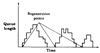
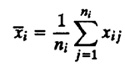
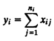
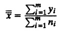
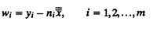
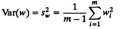
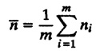
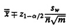

){kind=link}
){kind=link}

| Previous | Table of Contents | Next |
The following case study illustrates an application of this method.
To understand the concept of regeneration, consider the example of a single CPU scheduling simulation. Starting with an empty job queue, a possible trajectory of queue length as a function of time is shown in Figure 25.13. Notice that the system often returns to the initial state—the empty job queue. The trajectory, after returning to this state, does not depend upon the previous history. The waiting time for a job depends upon the CPU demands of previous jobs. However, for the job arriving after a CPU idle interval, the waiting time does not depend upon the prior jobs. In fact, the idle interval starts a new phase in which the waiting times of jobs that follow this interval do not depend upon anything that happened before the idle period. In a sense, the system takes a new birth totally independent of its previous life. Simulation experts call this phenomenon regeneration. The instant at which the system enters an independent phase is called the regeneration point. The duration between two successive regeneration points is called a regeneration cycle.

FIGURE 25.13 Regeneration points.
The trajectory shown in Figure 25.13 consists of three such cycles. Notice that the cycles are independent. The mean of the queue length in the second cycle is not correlated with that in the first cycle. The independence argument holds for variables other than the queue length as well.
A regenerative system (a system with regeneration cycles) can be analyzed using the method of regeneration. However, not all systems are regenerative. A system with two queues would regenerate when both queues are empty. As the number of queues increases, the regeneration points become rarer and regeneration cycles become longer. Some systems have long “memories” that make them nonregenerative.
The variance computation using regeneration cycles is a bit more complex than that in the method of batch means and the method of independent replications. This is because the regeneration cycles are of different lengths, whereas in the other two methods the batches or replications are all of the same length. In particular, the overall mean response cannot be obtained by averaging the mean responses of individual cycles. The cycle means are ratios with bases (cycle lengths) that are different. Recall from Section 12.7 that finding an average ratio requires special care.
Suppose you have a regenerative simulation consisting of m cycles of sizes n1, n2,..., nm, respectively. Cycle means are given by

However, the overall mean is not an arithmetic mean of cycle means:
The correct procedure to compute the overall mean and its confidence interval is as follows:





The confidence interval for the mean response is given by

Notice that unlike the previous two methods, the method of regeneration does not require removing transient observations. Thus, there is no waste. However, the method also has a number of disadvantages. First, the cycle lengths are unpredictable. It is not possible to plan the simulation time beforehand. Second, finding the regeneration point is not trivial. It may require a lot of checking after every event. Third, many of the variance reduction techniques such as common random streams or antithetic variables cannot be used due to the variable length of the cycles. Finally, the mean and variance estimators are biased in the sense that their expected values from a random sampling are not equal to the quantity being estimated.
A few other methods that have been developed for the purpose of variance computation are not discussed here due to their statistical sophistication. Two such methods are the autoregressive approach and spectral analysis. The first method involves fitting an autoregressive model to the observation sequence and then computing the variance from the variance of the residuals and coefficients of the autoregressive model. The spectral analysis approach is similar. It requires computing the spectral density from the coefficients of the autoregressive models. Neither of these methods is recommended for beginners.
We have discussed many ways of getting maximum information with minimum effort. Proper experimental designs help us to analyze many factors with a minimum number of experiments. Variance estimation techniques discussed in Section 25.5 allow us to stop a simulation as soon as the desired confidence level is attained. Books on simulations have another set of techniques called variance reduction techniques that generally require controlling random-number streams to introduce correlation in successive observations such that the variance of the results is reduced. One problem with almost all such techniques is that their careless use may backfire, that is, lead to increased variance. These techniques have been developed by statisticians for use by statistically sophisticated analysts only. Their use by beginners is not recommended. Therefore, such techniques are not described here.
25.1 Imagine that you have been called as an expert to review a simulation study. Which of the following simulation results would you consider nonintuitive and would want to carefully validate:
25.2 Find the duration of the transient interval for the following sample:
| Previous | Table of Contents | Next |